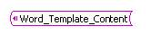
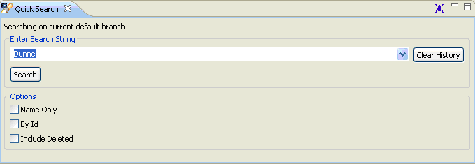
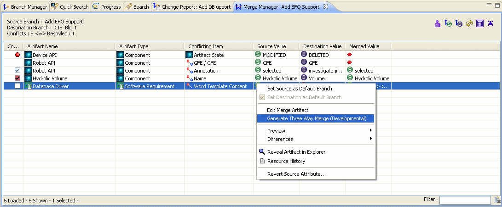
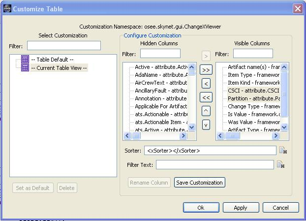
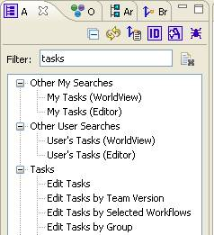
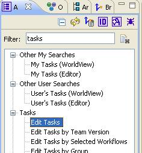
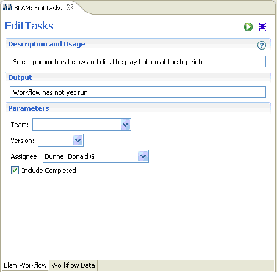

OSEE Release 0.4.0
This is a summary of some of the changes found in 0.4.0.
|
OSEE moves to Eclipse 3.4
|
See Eclipse 3.4 “What’s New” for summary of changes. |
|
Word XML tag change |
Editing a single word artifact no longer requires Word Xml tag.  Editing multiple artifacts continues to use the tags to separate individual artifacts. |
|
New “Quick Search”. |
Quick Search and the indexing mechanism have been re-designed. Indexing happens real-time on all branches as artifacts are modified and will update when a branch is committed. In addition, the performance of searching has been improved. 
|
|
“Quick Search” help is available. |
Press “F1” on Quick Search View or search for “Quick Search” in OSEE Help to get more information about searching, what to expect as results and the indexing process. |
|
“Merge View” help is available. |
Press “F1” on Merge View or search for “Merge View” in OSEE Help to get more information about how to correctly use the Merge View. |
|
Advanced “Three Way Merge” now available. |
OSEE can now provide a “Three Way Merge” document that will open a Word document and allow the user to more easily identify, Accept and Reject changes.
WARNING: This is “Developmental” and may not work in some cases. Please make sure to review all merged changes.

|
|
Table Customizations for Views have been upgraded. |
More columns are available for views like Change Report, ATS World, Task Tab, Task Editor and Mass Editor. In addition, some columns have changed their “id”. |
|
Any attribute is now available through Change Report table customizations. |
Any desired requirement/artifact attributes, can be added to the change report by selecting “Table Customization” icon and selecting the appropriate columns.
In “Customize Table” dialog, use the Filter box to filter by the desired attribute in the “Hidden Columns” and add to the “Visible Columns. Select “Save Customization” to save this as a stored customization.
Select the customization in the “Select Customization” block and select “Set as Default” to store this customization as your default for all Change Report Views.

|
|
Open Change Report by Id icon available in ATS Navigator |
You can quickly open a Change Report by action id by selecting the change report icon at the top of the ATS Navigator and entering in the id.

|
|
Edit Tasks BLAM is now Available easily narrow down tasks you wish to view.
|
Selecting “Edit Tasks” in the ATS Navigator will bring up the new “Edit Tasks” BLAM.

This allows the user to easily narrow down the tasks they wish to view at one time. It also has the “Include Completed” checkbox which will show both InWork and Completed tasks in the resulting editor.
This BLAM is an editor and will stay visible for the entire OSEE session allowing easy re-running of same search.

|
|
Change Report Refresh Bug and Workaround |
A known bug exists in the Change Report View where if the report is filtered and the refresh button is pressed, the view will blank out.
Workaround: Remove the filter and the Change Report will refresh. Then re-apply the filter. |